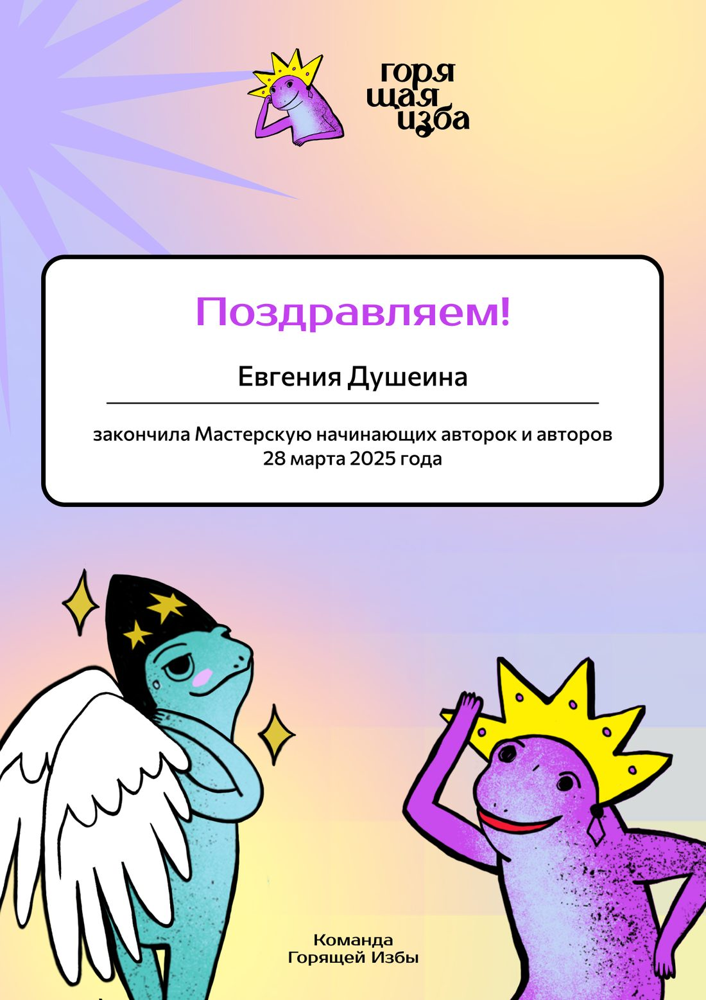

- Руководила командой из 14 штатных авторов: постановка задач, контроль сроков и качества текстов.
- Следила за метриками, собирала еженедельные и квартальные отчёты — в том числе по инфоповодам.
- Оптимизировала и улучшила систему работы с задачами от заказчика: продумала и внедрила методы интеграции, качественно усилила тексты, улучшила метрики по показам и взаимодействиям.
- Собрала базу знаний: методички для работы авторов, база каналов, шаблоны отчётностей.
- Тестировала гипотезы увеличения конверсий статей, проводила набор и обучение авторов в штат.
- Участвовала в разработке корпоративной CRM: сформулировала требования к редакционному модулю, метрикам и аналитике, тестировала систему, ставила задачи разработчику и вместе с ним довела продукт до запуска.
портфолио · 2022–2026
Евгения
Душеина
Журналист, копирайтер, редактор
Пишу и редактирую тексты, веду каналы. Слежу за метриками, развитием и улучшением продукта. Работала как штатным автором, так и редактором небольшого отдела.

Ключевые навыки
- Написание текстов
- Копирайтинг
- Написание статей
- Рерайтинг
- Корректура текстов
- Редактирование
- Журналистика
- Английский язык
- Литературное редактирование
- Интервьюирование
- Поиск информации в интернете
- Экспертные и продуктовые статьи
- Клиентские кейсы
- Пресс-релизы
- Тексты для лендингов и рассылок
- Интервью с экспертами
- Работа с корпоративным ПО (CRM)
01 Опыт работы
- Писала статьи по редполитике: 2–3 материала в день, включая выходные, объём 3 500–10 000 знаков. Плюс спецзаказы по ТЗ.
- Собирала фактуру, подбирала изображения (генерация, сток, скриншоты, простые коллажи). Правила текст по обратной связи от редактора.
- Отвечала на комментарии в канале. Раз в неделю собирала общую статистику по каналу. Предлагала варианты улучшений.
- Писала нативную рекламу. Работала с заголовками и удержанием.
- Вела Telegram-канал и сайт. Делала кросс-постинг из Telegram в VK, OK, Rutube: создавала новости от события до публикации.
- Писала посты, заголовки, интерактивы и сценарии коротких роликов, следила за реакциями и просмотрами.
- Собрала команду, придумала нейминг и логотип, выстроила рубрики и контент-план.
- Писала посты от идеи до оформления. Придумала и реализовала стикерпак: продали на 4 000 ₽ за 2 недели и вложили в продвижение.
- За 3 месяца существования проекта — 300+ подписчиков и квартирник на 50 человек. Канал: t.me/beltalk (сейчас не ведётся)
- Писала посты для VK, искала, обучала и курировала команду из 40 волонтёров, закрывала оргвопросы на площадке.
- Фестиваль собрал 600+ горожан. Местные СМИ назвали его самым масштабным книжным событием года в городе.
- Сообщество книжного клуба «Самиздат»: vk.com/club211423809
- Работала в нескольких форматах. Писала репортажи, интервью, гайды, новости. Самостоятельно предлагала темы, искала героев, проводила интервью, выезжала на репортажи, писала материал, подбирала иллюстрации и публиковала.
- Есть выездные телесюжеты для регионального эфира — придумывала темы, писала сюжеты, организовывала выезд, начитывала текст. Монтаж и съёмку не веду.
02 Образование
- Направление «Журналистика», профиль «Международная журналистика».
- Закончила мастерскую редакции: работа над текстом, структура, голос автора.

03 Компетенции
Тексты
- Придумывание тем и идей
- Статьи для Дзена
- Нативная реклама
- Интервью и репортаж
- Информационные статьи и гайды
- Посты для Telegram и VK
- Редактура и фактчекинг
- Экспертные и продуктовые статьи
- Клиентские кейсы
- Пресс-релизы
- Тексты для лендингов и рассылок
Процесс
- Методички и квартальные отчёты
- Сама нахожу героя и договариваюсь
- Расшифровка, структурирование
- Подбор изображений, генерация. Простая обработка
- Публикация на сайтах и в соцсетях
- Работа в сжатые сроки
- Работа по ТЗ и без него
- Контроль команды авторов
- Интервью с экспертами
- Работа с корпоративным ПО (CRM)
Моя сильная сторона — текст и редактура. Умею работать с изображениями и монтажом на базовом уверенном уровне. Не снимаю.
04 Кейсы
дзен · автор
Поток статей и развитие каналов
WolfMedia · февраль — июль 2025
- Задача
- Ежедневные статьи по редполитике, картинки к ним, правки редактора, раз в неделю — разбор статистики.
- Что сделала
- 2–3 текста в сутки, 3 500–10 000 знаков, в том числе в выходные. Собирала фактуру, подбирала фото, сток и коллажи, закрывала нативку и спецзаказы. Один канал поднимала с ~20 подписчиков.
- Вышло
- Стабильный качественный контент. Рост аудитории каналов. Рост показов и реакций на статьи в каналах. Предложения о сотрудничестве от сторонних авторов и рекламодателей.
Каналы, которые вела в период февраль — июль 2025: Очарованный странник Будни обычной женщины Примеры с «Очарованный странник»: Сдают билеты пачками: новые правила РЖД Почему в поездах спится лучше, чем дома
дзен · редактор
Организация работы и курирование отдела из 14 авторов
WolfMedia · август 2025 — февраль 2026
- Задача
- Держать объём и качество по команде, метрики и отчётность. Встроить инфоповоды в статьи так, чтобы это не выглядело вставкой.
- Что сделала
- Распределяла задачи, проверяла тексты, писала отчёты — недельные, квартальные и по запросу. Убрала блок-вставки, ввела авторское мнение и более связные нативные интеграции, собрала методички, тестировала гипотезы.
- Вышло
- Оптимизированная и продуктивная работа отдела. Рост ключевых метрик (взаимодействия по статьям). Подробные результаты по нативной рекламе — в кейсе ниже. Методички не показываю из-за NDA.
нативная реклама · бренды
Нативные интеграции для брендов
WolfMedia · 2025 — 2026
- Задача
- Встроить рекламные инфоповоды брендов в статьи Дзен-каналов так, чтобы реклама читалась как полезный материал.
- Что сделала
- Перестроила работу с нативной рекламой в Дзен-каналах: вместо явных рекламных вставок ввела подачу через «авторское мнение» и сделала интеграции плавными и связанными с темой статьи. Написала для авторов и редакторов методички по инфоповодам, заголовкам и комментингу, собрала базу знаний и ввела KPI для авторов.
- Вышло
-
- За два месяца эффективность одной интеграции выросла примерно на 75%, хотя интеграций стало на 37% меньше — ставка на качество, а не количество.
- Конверсия в дочитывание выросла на 17% за месяц, вовлечённость — на 20%.
- Протестировала новую рубрику: её статьи показывали результат в 1,7–3,6 раза выше, чем остальной контент канала.
Бренды и абсолютные цифры не раскрываю из-за NDA.
интервью · региональное СМИ
Организация и проведение интервью с победительницей «Битвы шефов» Анастасией Мироновой
«Белгород-медиа»
- Задача
- Предложить тему, найти героиню, написать интервью и выложить на сайт.
- Что сделала
- Сама вышла на контакт, провела разговор, расшифровала, собрала текст, подобрала фото и опубликовала материал.
- Вышло
- Почти 1 000 просмотров на сайте и около 9 000 в соцсетях за сутки.
интервью · первая полоса
«Трава у дома»: белгородские травницы
студенческое медиа «404»
- Задача
- Написать интервью про травничество в области — без эзотерики, через живых людей.
- Что сделала
- Нашла трёх героинь с разным бэкграундом: медобразование, курсы и самоучка. Записала, собрала текст, нашла фотографа.
- Вышло
- Материал вышел на первой полосе.
К сожалению, сейчас сайт недоступен. Ознакомиться с материалом можно по ссылке: disk.yandex.ru
гайд · карточки
Как открыть ИП в Белгороде без вложений
«Новый Белгород»
- Задача
- Короткая практическая статья по ТЗ для карточек.
- Что сделала
- Собрала факты, взяла комментарии у людей с реальными кейсами, написала и сверстала текст под формат.
- Вышло
- Материал вышел в соцсетях издания.
социальная тема · независимое медиа
Текст о переживании детской смерти
«Горящая изба»
- Задача
- Собрать материал: матери, которые пережили своих детей.
- Что сделала
- Нашла единственный профильный фонд, через них вышла на героинь, записала личные интервью и комментарий директора. Из разговора с фондом собрала две инструкции.
- Вышло
- Текст вышел в «Горящей избе».
телесюжеты · региональное ТВ
Новостные сюжеты для регионального эфира
«Логос», Кострома
- Задача
- Подготовить несколько новостных сюжетов для регионального телевидения.
- Что сделала
- Искала темы, договаривалась о съёмках, выезжала, писала сюжет и начитывала текст. Съёмку и монтаж не веду.
- Вышло
- Сюжеты вышли в эфир.
запуск канала · посты
Молодёжный Telegram с нуля
Управление молодёжной политики, 2022
- Задача
- Сделать нескучный канал: новости, статьи, афиша — без казённого языка.
- Что сделала
- Собрала команду, придумала нейминг и лого, выстроила рубрики и контент-план. Писала посты, запускала активности. Придумала и реализовала стикерпак: продали на 4 000 ₽ за 2 недели и вложили в продвижение.
- Вышло
- За 3 месяца — 300+ подписчиков и квартирник на 50 человек. Канал сейчас не ведётся.
книжный клуб · посты
Книжный клуб «Самиздат»
городской проект, Белгород, 2022
- Задача
- Создать проект, который продвигает интерес к чтению и книжную эстетику.
- Что сделала
- Вела VK-сообщество: посты, рубрики, тон. Была соорганизатором городского книжного фестиваля «Развал»: искала, обучала и курировала команду из 40 волонтёров, закрывала оргвопросы на площадке.
- Вышло
- 900+ подписчиков «Самиздата» во VK. Фестиваль собрал 600+ горожан; местные СМИ назвали его самым масштабным книжным событием года в городе.
продукт · CRM
Редакционная CRM
- Задача
- Помочь команде разработки создать корпоративную CRM для редакции.
- Что сделала
- Сформулировала требования к редакционному функционалу, метрикам и аналитике, тестировала систему и вела правки с программистом до финальной версии.
- Вышло
- Система доведена до финального продукта.
05 Контакты
Буду рада сотрудничеству! Отвечаю всю неделю с 8:00 до 19:00.
- Telegram @zlayastarushka
- Почта dusheina03@bk.ru
- Телефон +7 920 391-49-73